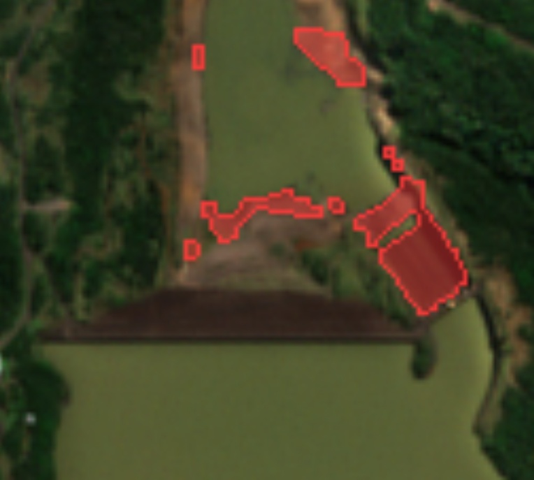
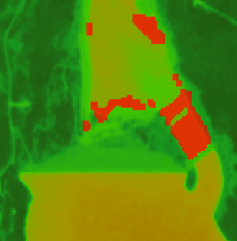

Monitoramento ambiental por satélite
O meio ambiente não pode esperar a informação chegar ao escritório.
O EcoFlow compara imagens de satélite da sua propriedade, detecta desmatamento, queimadas e alterações na vegetação, e avisa a gestão antes que o problema cresça.
empresas reportam dados ambientais ao Ibama. Quando esses dados ficam dispersos, a ação demora. Fonte do número: IBAMA — RAPP
O problema
Analisar imagem de satélite na mão leva tempo demais.
O produto
Análises ágeis, automação e escala numa única plataforma.
Você desenha a área, o EcoFlow cuida do resto: busca as imagens mais recentes do Copernicus, compara com as anteriores e destaca o que mudou.
Desenhe sua área
Marque o perímetro de fazendas, reservas ou barragens direto no mapa. Cada área fica salva na plataforma e pode ser exportada em GeoJSON.
Comparamos antes e depois
Imagens Sentinel-2 passam pelo índice NDVI, que mede a saúde da vegetação. Queda brusca no índice vira suspeita de desmatamento ou queimada.
Receba o alerta
As alterações aparecem no painel por gravidade e tipo, com verificação visual, histórico, auditoria das análises e relatórios em HTML.
Telas do MVP
Do alerta à imagem, sem trocar de ferramenta.


Planos · modelo B2B para empresas com responsabilidade ambiental
Preço claro, do primeiro hectare à operação inteira.
Básico
- Uso de dados reais da propriedade.
- Relatórios em HTML e áreas exportáveis em GeoJSON.
- Histórico e auditoria completos das análises.
Premium
- Até 30 áreas e 5.000 hectares monitorados.
- Análises semanais para identificar alterações mais rápido.
- Organização de múltiplas propriedades em uma única plataforma.
Enterprise
- Áreas e hectares sob medida, sem limite fixo.
- Monitoramento diário de alertas, conforme disponibilidade de dados.
- Atendimento prioritário.